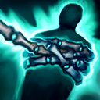
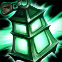
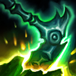
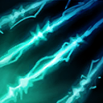

核心裝備
 好戰者鎧甲
好戰者鎧甲 自然之力
自然之力 騎士誓願
騎士誓願 雅瑪蘭守護像
雅瑪蘭守護像 黎明法衣
黎明法衣

以下為本站 7.2d 校正後的標準配置；實戰仍需依敵方陣容調整。


技能優先：E > Q > W
附近敵軍陣亡時可能掉落靈魂；收集後永久提高物理防禦與魔法攻擊。瑟雷西不會隨等級自然獲得物理防禦，因此安全收魂是成長坦度的重要來源。

投出鎖鏈暈眩並持續拉扯第一個命中的敵人，同時揭露其視野；再次施放可讓瑟雷西飛向目標。命中敵人會縮短技能冷卻，但二段進場前仍要確認隊友距離與敵方控制。｜7.2d：命中英雄時的冷卻返還下調至 2 秒。

將燈籠丟到指定位置，替自己與第一位靠近的友軍提供護盾；友軍可點擊士兵鍵衝向瑟雷西。可用於救援、接應打野、跨牆撤退或替遠處隊友提供護盾。

被動使下一次普攻依等待時間造成額外魔法傷害；主動揮動鎖鏈，依施放方向將敵人拉近或擊退並造成緩速。可打斷位移、把目標掃回隊伍，或推開突進者保護後排。

在身旁建立幽魂牆壁；敵方英雄撞上牆壁時會受到魔法傷害與極高緩速。第一面牆破裂後，其餘牆壁效果降低，適合配合鉤鎖與掃蕩形成長時間控制鏈。
3技拉回緩速 → 強化普攻 → 1技近距離命中 → 視情況二段進場 → 4技封鎖退路
先用懾魂掃蕩拉近並緩速，能大幅提高死亡宣告命中率。鉤中後不要自動二段飛入，確認隊友能跟上且敵方關鍵控制不在，再接大絕封路。
閃現貼近 → 3技掃回目標 → 4技建立牆壁 → 1技控制接續 → 點燃壓低回復
閃現後立即反向施放懾魂掃蕩，把目標掃向隊友；大絕先封住退路，再以近距離死亡宣告延長控制。這套適合抓沒有位移或已交閃現的後排。
2技向後丟燈籠 → 1技命中目標 → 二段飛入 → 3技掃回或擊退 → 4技封鎖戰場
先把燈籠丟給牆後或視野外的打野，再用鉤鎖命中並二段進場；隊友點燈籠跟上後，可形成突然的多打少。燈籠要先放，避免自己飛入後才發現隊友無法接戰。
一級先點懾魂掃蕩，利用強化普攻與拉近／擊退效果爭奪草叢和兵線主動權。二級取得死亡宣告後，不要在士兵正面硬鉤；先用走位、草叢或懾魂掃蕩逼出位移，再出鉤命中率更高。鬼影燈籠既能救射手，也能先丟向後方接打野進場；沒有視野時不要為撿一顆靈魂走進危險區。
聖物之盾完成任務後，跟著打野與主力搶河道和物件區視野。海克斯閃現可從牆後或草叢改變進場角度；死亡宣告命中後先判斷隊友能否跟上，再決定是否二段飛入。燈籠應提前放在隊友撤退路線，或放在自己身後讓打野快速接戰，不要等隊友已被控制才丟。
團戰可依陣容選擇先手或保排。敵方後排站位失誤時用鉤鎖抓單；敵方刺客較強時則留懾魂掃蕩與惡靈領域保護主力。不要因鉤中前排就固定飛入，先看敵方控制與隊友距離；靈魂提供的永久物防與魔攻會持續提高坦度、護盾和技能傷害，但站位與燈籠時機仍比盲目進場更重要。
對局名單是本站依英雄機制與目前配置整理的參考，不等同固定勝率。
輔助調整以團隊承傷、解控與保護主力為優先，不為了單一敵人破壞整套功能裝。
觸發：敵方主要輸出集中在射手、物理刺客或普攻型英雄。
蘭頓之兆進一步降低暴擊傷害，適合第二層針對。
觸發：敵方主要威脅來自法師、AP刺客或大量範圍魔法傷害。
改走水星之靴→鎖鏈軍靴，補魔防、韌性與魔法護盾。
觸發：敵方硬控能直接抓死己方主力，或你進場後會被連續控制。
改走水星之靴→鎖鏈軍靴，直接補韌性與魔防。
提醒：米凱主要替隊友解控；水星彎刀則是物理英雄自我解控，兩者角色不同。
觸發：敵方有大量治療、吸血或回復，讓己方集火很難完成擊殺。
荊棘之甲讓前排在承受普攻或主動造成傷害時施加重創，同時補物防。
觸發：己方只有一個主要輸出點，且敵方每波團戰都會集中切入他。
日輪的加冕提供即時群體護盾，補上騎士誓願以外的團隊保護。
提醒：保排調整看己方陣容，不是看到敵方刺客就把所有功能裝都換成防裝。
7.2a 輔助路瑟雷西正式母版：技能名稱與核心機制依 Riot Games 台灣《激鬥峽谷》瑟雷西英雄頁校正，版本基準採官方 7.2a 更新公告；出裝、符文、召喚師技能、技能順序與對局方向交叉參考 WildRiftFire Patch 7.2a 後整合。Tier 維持本站既有輔助路評級。｜v69：瑟雷西固定為輔助路英雄正式母版。｜v90：7.2d：死亡宣告命中英雄的冷卻返還由 3 秒下調至 2 秒。
本站於 2026-08-27 依 Patch 7.2d 重新檢查此配置。 Tier、出裝、符文與對局屬於 Wild Rift Guide 的整理與分析，不是 Riot Games 官方推薦；版本改動後會再依官方公告與實戰資料校正。